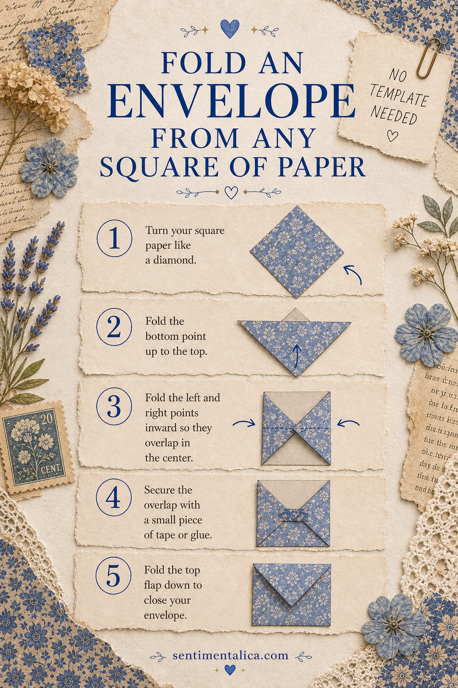
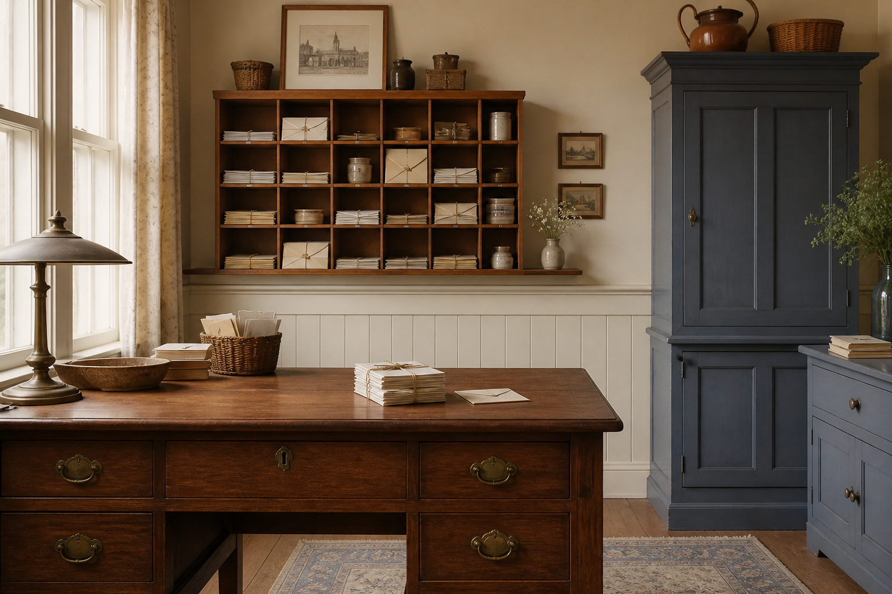

A square of paper can become a tidy pocket for notes, tickets, seeds, or tiny photographs. This version needs no template, and the proportions adjust naturally whether you begin with scrapbook paper, a book page, or a printable.

Prepare the square
Choose paper that creases cleanly. A 15-centimeter square makes a useful journal envelope; larger squares suit photographs. Place the decorative side face down and turn the square so it looks like a diamond.
Fold the sides
Bring the left and right corners toward the center, overlapping them by about one centimeter. Crease the folds but do not glue yet. Fold the bottom corner upward so its point rises slightly above the side overlap.

Shape the pocket
Open the bottom fold. Add narrow glue lines only where the bottom flap meets the two side flaps, then fold it back into place. Avoid gluing across the center or you will reduce the usable pocket. Press under a book for several minutes if the paper springs open.
Finish the top flap
Fold the remaining top corner down. Leave it pointed for a simple look, round the tip, or tuck it behind a paper circle. For a reusable closure, glue one paper circle to the flap and another to the body, then wind thread between them.
Make it journal-friendly
Attach only the back edge to a journal page if you want the whole envelope to lift. Glue three sides if you want a second pocket behind it. Before filling, check that thick contents will not strain the binding. A folded note and one flat keepsake usually give the best balance.